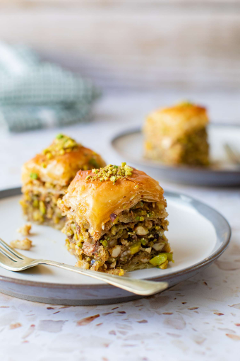

Baklava

Rating : 4.8 Duration: 2 hours
Serving size : 400 g
Recipe:
Ingredients:
- 0.5 oz shelled pistachios chopped coarsely
- 0.5 oz walnuts chopped coarsely
- 0.5 oz hazelnuts chopped coarsely
- 0.02 cup sugar
- 0.08 Tbsp ground cinnamon
- pinch ground cloves
- 1.33 oz phyllo dough thawed
- 0.13 sticks (Tbsp) unsalted butter up to 16, melted
- 0.06 cup sugar
- 0.08 cup cold water
- 0.08 cup honey
- 0.08 Tbsp extract orange (optional)
- 0.42 whole cloves
- 0.08 juice of lemon
Directions:
- Preheat oven to 350 degrees F
- Make the Honey Syrup. Place the sugar and water in a saucepan and heat stove-top, stirring occasionally, until sugar dissolves. Add the honey, orange extract, and whole cloves (cloves are optional here); stir to mix. Bring to a boil, then lower heat and let simmer for about 25 minutes. Remove syrup from heat. Add lemon juice. Remove the whole cloves and let the syrup cool completely (it will thicken a little bit).
- Make the Nut Mixture. In the bowl of a food processor fitted with a blade, add the pistachios, walnut, and hazelnuts. Pulse a few times to chop. Transfer to a large mixing bowl and add sugar, cinnamon, and ground cloves. Mix well to combine.
- Prepare the Phyllo Pastry. Carefully unroll the thawed phyllo pastry and place the sheets in between two clean kitchen towels. This will help keep the phyllo from breaking while you work.
- Assemble the First Few Layers of Baklava. Prepare a 9”x 13”x 2” baking pan. Brush the interior of the baking pan with some of the melted butter.
- To assemble the baklava, take one sheet of phyllo and place it in the pan (for this size pan, fold the phyllo sheet in half, and it fits perfectly. You can also do a bit of trimming using a pair of kitchen shears). Brush the top of the phyllo sheet with the melted butter.Repeat this process a few more times until you have used up about ⅓ of the phyllo pastry, each layer being brushed with the melted butter.
- Distribute some of the Nut Mixture. Now, distribute about ½ of the nut mixture evenly over the top layer of phyllo. Continue Assembling the Baklava .Continue assembling the baklava, one sheet of phyllo pastry at a time using another ⅓ of the phyllo. Again, brush each layer with a bit of the melted butter. Distribute the remaining ½ of the nut mixture evenly over the top layer of phyllo. Finish the remaining ⅓ of the phyllo pastry following the same process, laying one folded sheet at a time and brushing each layer with melted butter. Brush the very top sheet of phyllo with butter.
- Cut the Baklava into Pieces. Using a good sharp knife, cut the pastry into diamond shaped pieces
- Place the baklava dish on the middle rack of your heated oven. Bake anywhere from 35 to 45 minutes or until the top of the baklava turns golden and a skewer inserted in the center comes out clean.
- As soon as you remove the baklava from the oven, pour the cooled syrup all over the hot baklava. Make sure you distribute the syrup evenly.
- Let the baklava cool completely (it's best if you leave it for several hours, or at least 1 hour, to allow the flaky phyllo layers to absorb the honey syrup completely). Cut through the pieces you marked earlier. And if you like, garnish with a little sprinkle of pistachio before serving.